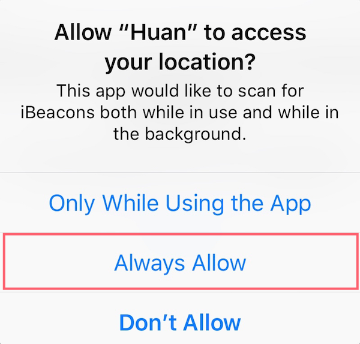
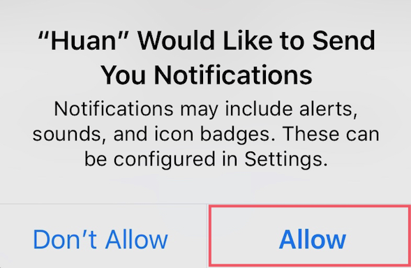

Huan helps you find lost pets.
Selecting 'Always' makes sure Huan tags will be detected even if the application is running in the background, or if the screen is locked.

Alternatively, go to Settings > Huan > Location and set to 'Always'.
Allow notifications in order to be alerted when your missing pet is found, or when a lost pet is detected in your vincinity.

Alternatively, go to Settings > Huan > Notifications and enable 'Allow Notifications'.